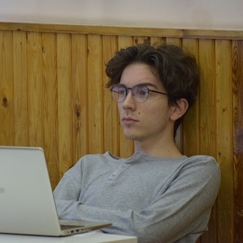
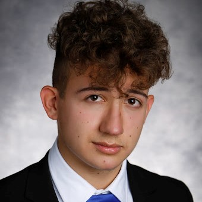
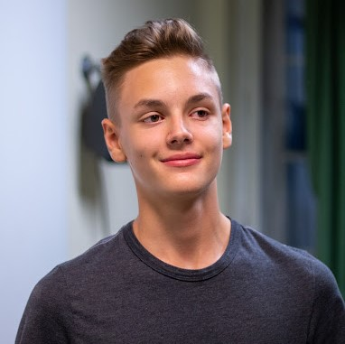
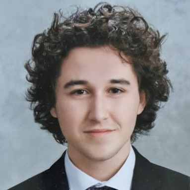
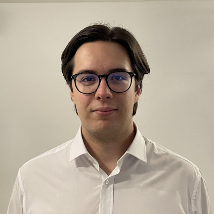

Kovács Bertold
 Hollandiában, a TU Delft Computer Science and Engineering szakán tanulok. A Budapesti Fazekas
matektagozatán kezdtem informatikából versenyezni (OKTV 21.) a delfti egyetemi csapatommal pedig
bejutottam a Benelux Algorithm Programming Contest amszterdami döntőjébe. Nagyon érdekel a filozófia
is (OKTV 5.), a BSPEE nemzetközi esszéversenyen kölöndíjat nyertem. Szabadidőmben legszívesebben falat
mászom, vagy csúfos vereséget szenvedek a barátaimtól különböző társasokban.
Hollandiában, a TU Delft Computer Science and Engineering szakán tanulok. A Budapesti Fazekas
matektagozatán kezdtem informatikából versenyezni (OKTV 21.) a delfti egyetemi csapatommal pedig
bejutottam a Benelux Algorithm Programming Contest amszterdami döntőjébe. Nagyon érdekel a filozófia
is (OKTV 5.), a BSPEE nemzetközi esszéversenyen kölöndíjat nyertem. Szabadidőmben legszívesebben falat
mászom, vagy csúfos vereséget szenvedek a barátaimtól különböző társasokban.
Mácsai Dániel
 Az ELTE matematika szakos hallgatója vagyok, elméleti matematikus specializáción. Gimnáziumi éveim alatt a
szabadidőm jelentős részét matematikával, informatikával és fizikával töltöttem, mert érdekesnek és szórakoztatónak
találtam ezeket a tárgyakat. Ennek eredménye is lett, OKTV döntőbe jutottam mindhárom tárgyból többször, matematikából 3. majd 1. helyezést
sikerült elérnem - de a legfontosabbnak nem ezeket számokat/helyezéseket tartom, hanem azt, hogy csak azt csináltam, amihez kedvem volt.
Ezen kívül az Országos Logo Versenyen 6. majd 1. helyezést értem el. Ha éppen nem a tanulmányaimmal foglalkozom, akkor zenélni, vagy sportolni
szoktam: legjobban a falmászás és a szertorna érdekel, illetve gitáron és zongorán játszok. Nagyon szeretem különféle területeken fejleszteni
magamat, szerintem felülmúlhatatlan az az érzés, amikor megért, vagy ráérez az ember egy új dologra. Ezért szeretem a programozást is, rendkívül
sok sikerélményt tud nyújtani. Nagyon szívesen továbbadom azt a szemléletet amit én kaptam: a felfedezésen és élményen alapuló tanulást.
Az ELTE matematika szakos hallgatója vagyok, elméleti matematikus specializáción. Gimnáziumi éveim alatt a
szabadidőm jelentős részét matematikával, informatikával és fizikával töltöttem, mert érdekesnek és szórakoztatónak
találtam ezeket a tárgyakat. Ennek eredménye is lett, OKTV döntőbe jutottam mindhárom tárgyból többször, matematikából 3. majd 1. helyezést
sikerült elérnem - de a legfontosabbnak nem ezeket számokat/helyezéseket tartom, hanem azt, hogy csak azt csináltam, amihez kedvem volt.
Ezen kívül az Országos Logo Versenyen 6. majd 1. helyezést értem el. Ha éppen nem a tanulmányaimmal foglalkozom, akkor zenélni, vagy sportolni
szoktam: legjobban a falmászás és a szertorna érdekel, illetve gitáron és zongorán játszok. Nagyon szeretem különféle területeken fejleszteni
magamat, szerintem felülmúlhatatlan az az érzés, amikor megért, vagy ráérez az ember egy új dologra. Ezért szeretem a programozást is, rendkívül
sok sikerélményt tud nyújtani. Nagyon szívesen továbbadom azt a szemléletet amit én kaptam: a felfedezésen és élményen alapuló tanulást.
Molnár Gergely
Molnár Gergely vagyok, a győri SZC Jedlik Ányos Gépipari és Informatikai Technikum 12-es padjait koptatom. Szabadidőmben szeretek sportolni és programozni. A strandkézilabda magyar ifjúsági válogatott tagjaként képviseltem az országot a 2021-es Európabajnokságon. Emellett Java, C# és C++ programozási nyelvet tanulok, és kisebb alkalmazások fejlesztésével foglalkozom. Ezen felül belemerültem a weblapszerkesztés világába is. Diáktársaimat fizikából és matematikából korrepetáltam céljaik elérésé érdekében. Ettől a ponttól kezdve döntöttem el, hogy tanítással szeretnék foglalkozni. Kezdetben nagymamákát és nagypapákat tanítottam a N@gyinet program keretében, majd kisebb gyerkőcök oktatására összpontosítottam. Úgy gondolom, hogy nagyon fontos a fiatalabb generációk oktatása.
Tiszay Dávid
 Középiskolai tanulmányaimat a Budapesti Fazekas Gimnáziumban végeztem speciális matematika tagozaton,
jelenleg az ELTE programtervező informatikus szak hallgatója vagyok. Érdeklődésem a matematika
irányába hamar kibontakozott, tagja voltam a Pósa-tábor sorozatnak, ahol egyedi gondolkodásmódot
tanultam, egyenesen Magyarország egyik legnagyobb matematikusától. Az évek során számos országos
versenyen értem el helyezést (Varga Tamás Matematikaverseny 5., Bolyai Matematika Csapatverseny 4.,
Nemes Tihamér Programozóverseny 12.), továbbá részt vettem egy tanéven keresztül húzódó projekten, mely
során egy eseményszervező messenger-bot megvalósítására törekedtünk. Már korábban is foglalkoztam
tanítással, a speciális matematika tagozatra jelentkező diákoknak tartottam felkészítő szakkört, az
Alphacademyben gimnáziumi éveim végén kezdtem el tanítani. Szabadidőmben sokat sportolok (országúti
kerékpár, tenisz), illetve stratégiai társasjátékokat játszom mind online, mind offline formában.
Középiskolai tanulmányaimat a Budapesti Fazekas Gimnáziumban végeztem speciális matematika tagozaton,
jelenleg az ELTE programtervező informatikus szak hallgatója vagyok. Érdeklődésem a matematika
irányába hamar kibontakozott, tagja voltam a Pósa-tábor sorozatnak, ahol egyedi gondolkodásmódot
tanultam, egyenesen Magyarország egyik legnagyobb matematikusától. Az évek során számos országos
versenyen értem el helyezést (Varga Tamás Matematikaverseny 5., Bolyai Matematika Csapatverseny 4.,
Nemes Tihamér Programozóverseny 12.), továbbá részt vettem egy tanéven keresztül húzódó projekten, mely
során egy eseményszervező messenger-bot megvalósítására törekedtünk. Már korábban is foglalkoztam
tanítással, a speciális matematika tagozatra jelentkező diákoknak tartottam felkészítő szakkört, az
Alphacademyben gimnáziumi éveim végén kezdtem el tanítani. Szabadidőmben sokat sportolok (országúti
kerékpár, tenisz), illetve stratégiai társasjátékokat játszom mind online, mind offline formában.
Tóth Gellért
 Tóth Gellért vagyok, a hollandiai Radboud University hallgatója: Artificial Intelligence-t
tanulok. Az Óbudai Árpád Gimnázium matek szakán végeztem. Matematikából hatalmas sikereket nem értem el,
ez persze nem jelenti azt hogy, az emelt érettségi egy másodpercig is megakasztott volna, viszont mivel
a programozás mindig is jobban érdekelt az abba befektetett extra idő meghozta a gyümölcsét. A 2021-es
nemzetközi informatika diákolimpián és a 2020-as középeurópai informatika diákolimipán is ezüstérmes
lettem, magyar vonatkozásból pedig az OKTV 4. helyemre lehetek büszke, habár pont az kicsit csalódás
volt számomra.
Tóth Gellért vagyok, a hollandiai Radboud University hallgatója: Artificial Intelligence-t
tanulok. Az Óbudai Árpád Gimnázium matek szakán végeztem. Matematikából hatalmas sikereket nem értem el,
ez persze nem jelenti azt hogy, az emelt érettségi egy másodpercig is megakasztott volna, viszont mivel
a programozás mindig is jobban érdekelt az abba befektetett extra idő meghozta a gyümölcsét. A 2021-es
nemzetközi informatika diákolimpián és a 2020-as középeurópai informatika diákolimipán is ezüstérmes
lettem, magyar vonatkozásból pedig az OKTV 4. helyemre lehetek büszke, habár pont az kicsit csalódás
volt számomra.
A diákolimpia után keresett meg Ágoston, hogy szeretnék-e itt tanítani, de már korábban is voltak tanítással tapasztalataim. Mentoráltam vidéki diákokat matematikából és a saját sulimban egyik osztálytársammal infó szakkört vezettünk több kevesebb sikerrel.
Szabó Kornél György
 Szabó Kornél vagyok, a Cambridge-i Egyetem informatika szakos hallgatója.
Szabó Kornél vagyok, a Cambridge-i Egyetem informatika szakos hallgatója.
Középiskolás tanulmányaimat a Budapesti Fazekas Mihály Gyakorló Általános Iskola és Gimnázium speciális matematika tagozatán végeztem. Ezen évek alatt sokat foglalkoztam versenyprogramozással és matematikaversenyekkel, a Nemzetközi Informatikai Diákolimpián bronzérmes, a Közép-Európai Informatikai Diákolimpián bronzérmes, a Nemzetközi Matematikai Diákolimpián bronzérmes, a Közép-Európai Matematikai Diákolimpián ezüstérmes lettem.
Magyar versenyeken is sikeresen szerepeltem, informatika OKTV-n 2., matematika OKTV-n 10. helyezett lettem. Gimnáziumi éveim végén kezdtem az Alphacademyben tanítani, de korábban is foglalkoztam tehetséggondozással, például a Pósa-táborokban történő segítősködéseim alkalmával. Hobbijaim közé tartozik az olvasás, az evezés és a falmászás.
Vári-Kakas Andor
 Vári-Kakas Andor vagyok, a ETH Zürich egyetem informatika mesterszakos hallgatója, ahol elméleti informatikára
illetve gépi tanulásra specializálódom. Az alapszakot Cambridge-ben végeztem informatika szakon. Középiskolás
tanulmányaimat a Budapesti Fazekas Mihály Gyakorló Általános Iskola és Gimnázium speciális matematika tagozatán teljesítettem.
Gimnáziumi éveim alatt sokat foglalkoztam versenyprogramozással és matematikaversenyekkel: országos bajnoka vagyok a Zrínyi
Ilona matematikaversenyek, a Bolyai matematika csapatversenynek, illetve a Nemes Tihamér programozásversenynek. Emellett bronzérmet
szereztem a Nemzetközi Nyelvészeti Diákolimpián Prágában. A cambridge-i egyetemen másodévben 2., harmadévben 7. helyet értem el az évfolyamon.
A tanítás már régóta érdekel, ismerőseimet 4 éve készítem fel versenyekre, érettségire, illetve dolgozatokra, és 2 éve csatlakoztam
az Alphacademyhez. Lételemem a sportolás (pl. futsal, ultimate frisbee, asztalitenisz), elhivatott vagyok a
sportolás fontosságával kapcsolatban a szellemi tevékenységek kiegészítése végett.
Vári-Kakas Andor vagyok, a ETH Zürich egyetem informatika mesterszakos hallgatója, ahol elméleti informatikára
illetve gépi tanulásra specializálódom. Az alapszakot Cambridge-ben végeztem informatika szakon. Középiskolás
tanulmányaimat a Budapesti Fazekas Mihály Gyakorló Általános Iskola és Gimnázium speciális matematika tagozatán teljesítettem.
Gimnáziumi éveim alatt sokat foglalkoztam versenyprogramozással és matematikaversenyekkel: országos bajnoka vagyok a Zrínyi
Ilona matematikaversenyek, a Bolyai matematika csapatversenynek, illetve a Nemes Tihamér programozásversenynek. Emellett bronzérmet
szereztem a Nemzetközi Nyelvészeti Diákolimpián Prágában. A cambridge-i egyetemen másodévben 2., harmadévben 7. helyet értem el az évfolyamon.
A tanítás már régóta érdekel, ismerőseimet 4 éve készítem fel versenyekre, érettségire, illetve dolgozatokra, és 2 éve csatlakoztam
az Alphacademyhez. Lételemem a sportolás (pl. futsal, ultimate frisbee, asztalitenisz), elhivatott vagyok a
sportolás fontosságával kapcsolatban a szellemi tevékenységek kiegészítése végett.
Albert Márton
 2021-ben végeztem a Budapesti Fazekas matek tagozatán, most pedig az ELTE matek szakos hallgatója
vagyok. A matematikán kívül a programozást is nagyon szeretem, mellyel középiskolás éveim alatt
ismerkedtem meg, és azóta is sokat foglalkozom vele szabadidőmben. Nagyon szeretek csapatban dolgozni
különféle projekteken, ilyen jellegű versenyeken szoktam is indulni (World Robot Olympiad 5. hely,
Ericsson Programozó Bajnokság 2. hely), valamint számos egyéni projektem is van. Legjobban a
játéktervezés és -fejlesztés érdekel, ami a különféle stratégiai játékok iránti érdeklődésemből fakad.
Sportolni is szeretek, szoktam biciklizni, futni és falat mászni.
2021-ben végeztem a Budapesti Fazekas matek tagozatán, most pedig az ELTE matek szakos hallgatója
vagyok. A matematikán kívül a programozást is nagyon szeretem, mellyel középiskolás éveim alatt
ismerkedtem meg, és azóta is sokat foglalkozom vele szabadidőmben. Nagyon szeretek csapatban dolgozni
különféle projekteken, ilyen jellegű versenyeken szoktam is indulni (World Robot Olympiad 5. hely,
Ericsson Programozó Bajnokság 2. hely), valamint számos egyéni projektem is van. Legjobban a
játéktervezés és -fejlesztés érdekel, ami a különféle stratégiai játékok iránti érdeklődésemből fakad.
Sportolni is szeretek, szoktam biciklizni, futni és falat mászni.
Balázsi Bálint
Balázsi Bálint vagyok, a Győri SZC Jedlik Ányos Gépipari és Informatikai Technikum szoftverfejlesztő szakán tanuló, 12-es diák. Már egészen kiskorom óta érdekel a technológia világa, ezért is kezdtem el ezen a vonalon tanulni. Néhány barátommal együtt van egy fotózással és videózással foglalkozó vállalkozásunk, amit nagyon élvezek csinálni. Mindig is szerettem sportolni, korábban 8 évig szertornáztam, most pedig röplabdázok.
Bertalan Dávid
 A BME matematika szakán vagyok adattudományi specializáción, előtte a Berzsenyi Dániel Gimnáziumban matek tagozatra jártam. 8 éve tanítok főleg matematikát, de programozást is az utóbbi években. A gondolkodtató feladatokkal “hűha” élményt okozni és ezzel maradandó emlékekeket adni a gyerekeknek a kedvenc tevékenységeim egyike. Imagine logo országos első helyezet voltam negyedikesen és azóta is nagyon szeretek grafikus programokkal foglalkozni. Nem szívesen jártam versenyezni, a mai napig az otthon kényelmében szeretek nehéz problémákon gondolkozni. Ha nem tanulok vagy tanítok, akkor nagy sétákra megyek vagy a közeli terembe falat mászni.
Csontos Dávid
 Csontos Dávid vagyok, elsőéves programtervező informatikus az ELTE-n. 2022-ben végeztem a Budapesti Fazekas Mihály Gimnáziumban matematika tagozaton, ahol nem csupán matematikát tanultam, itt ismerkedtem meg a programozással amiért nagyon hálás vagyok. Az Alphacademy csapatát 2022 óta erősítem, így a volt versenytársaimmal és tanáraimmal együtt segíthetjük a mostani fiatalokat. Az utóbbi években különböző matek és informatika versenyekre jártam. Kiemelném pár jelentős eredményemet: Nemes Tihamér programozás Online 1., Nemes Tihamér programozás 13., OKTV programozás döntő, Arany Dániel országos matekverseny 19. és sakk országos 1. helyezésem. Persze a szabadidőmben nemcsak programozni és matekozni szoktam, nagyon szeretem a sportokat főleg a sakkot és a focit.
Dzama-Demjén Péter
Dzama-Demjén Péter vagyok, 2022-ben érettségiztem a Budapesti Fazekas Mihály Gimnáziumban, jelenleg a Budapesti Corvinus Egyetem hallgatója vagyok. A tanulmányaim mellett egy autóipari vállalatnál dolgozom egy mérnöki szoftver konfigurációjával. Számomra a programozás hobbiként kezdődött, amit hosszas önképzés után a mindennapjaim örömteli részévé tettem. Eleinte webfejlesztéssel kezdtem foglalkozni, amelyben az elért sikereim motiváltak az eszköztáram bővítésére. Gimnáziumi éveim során győztese voltam a Kárpát-medencei Kölcsey Ferenc szónokversenynek, és lehetőségem volt számtalan eseményen próbára tenni a kommunikációs készségeimet, amelyeket mai napig használok az oktatás során is. Nagyon szerettem a közösségemre jó hatással lenni, ezért sokszor aktivizáltzam magam társaimat illető ügyekben. Számomra az oktatás is egy effajta tevékenység, amellyel szeretnék visszaadni a társadalomnak. Szabadidőmben leginkább zenével és sportolással szoktam foglalkozni, ahogy természetesen a programozással is.
Gubicza Milán
Tizenkettedik osztályos diák vagyok a Győri Jedlik Ányos Gépipari és Informatikai Technikumban, ahol szoftverfejlesztést és tesztelést tanulok. Tizenkét éves koromig a humán tantárgyak érdekeltek, több országos irodalmi versenyt, többek között szavaló versenyt nyertem. Tizenhárom évesen diáktársaimmal megnyertük a Veszprémi Szakképzési Centrum országos informatika versenyét, ahol az iskola modernizált, robotizált oktatási rendszerét terveztük meg. Azóta az informatika lett a fő érdeklődési köröm, kilencedik osztályban “Nagyinet” néven nyugdíjasokat oktattam informatikára. Itt tapasztaltam meg először, hogy mennyire jó érzés a saját tudásomat átadni másoknak. Emellett van egy videózással/fotózással foglalkozó vállalkozásom is, amivel sokat foglalkozom. Szabadidőmben kosárlabdázok és egyéb hobbi sportokat űzök.
Hervay Bence
 A Cambridge-i egyetem informatika szakos hallgatója vagyok, az Alphacademy-hez a középiskolai
tanulmányaim utolsó évében csatlakoztam. A Budapesti Fazekas Mihály Gimnázium matek tagozatára jártam,
az itt eltöltött 6 év alatt sokat foglalkoztam matematikával (OKTV 12.), informatikával (OKTV 13. és
14.), és fizikával (OKTV 1. és 7.). Ezen három tantárgy ötvözése segített számos robotika versenyen is,
a kedvencem a 2017-es First Global Challenge robotépítő- és programozó világbajnokság volt, melyet
megnyertünk és ennek köszönhetően az elnök családja meghívta a csapatot a Fehér Házba. Öt évig
akrobatikus
kosárlabdáztam a FaceTeam tagjaként, emellett rendszeresen röplabdáztam és kosaraztam, jelenleg pedig
sportszerűen ultimate frizbizek.
A Cambridge-i egyetem informatika szakos hallgatója vagyok, az Alphacademy-hez a középiskolai
tanulmányaim utolsó évében csatlakoztam. A Budapesti Fazekas Mihály Gimnázium matek tagozatára jártam,
az itt eltöltött 6 év alatt sokat foglalkoztam matematikával (OKTV 12.), informatikával (OKTV 13. és
14.), és fizikával (OKTV 1. és 7.). Ezen három tantárgy ötvözése segített számos robotika versenyen is,
a kedvencem a 2017-es First Global Challenge robotépítő- és programozó világbajnokság volt, melyet
megnyertünk és ennek köszönhetően az elnök családja meghívta a csapatot a Fehér Házba. Öt évig
akrobatikus
kosárlabdáztam a FaceTeam tagjaként, emellett rendszeresen röplabdáztam és kosaraztam, jelenleg pedig
sportszerűen ultimate frizbizek.
Horváth Balázs
 2021-ig a Budapesti Fazekas Mihály Gimnázium matematika tagozatán tanultam, most az ELTE hallgatója vagyok. A matematika, informatika mellett a filozófia iránt is nagyon érdeklődöm (OKTV 11. és
25. helyezés; Olimpiai válogató 3. helyezés, BSPEE esszéíróverseny különdíj). Az Alphacademy-hez egy éve
csatlakoztam, remélem a konkrét feladatok, ismeretek mellett a tanítványaimnak abból az élet minden
területén hasznos logikus gondolkodásból, problémamegoldó képességből is át tudok adni valamit, amit a
programozás, és általában a matematika jelent számomra.
2021-ig a Budapesti Fazekas Mihály Gimnázium matematika tagozatán tanultam, most az ELTE hallgatója vagyok. A matematika, informatika mellett a filozófia iránt is nagyon érdeklődöm (OKTV 11. és
25. helyezés; Olimpiai válogató 3. helyezés, BSPEE esszéíróverseny különdíj). Az Alphacademy-hez egy éve
csatlakoztam, remélem a konkrét feladatok, ismeretek mellett a tanítványaimnak abból az élet minden
területén hasznos logikus gondolkodásból, problémamegoldó képességből is át tudok adni valamit, amit a
programozás, és általában a matematika jelent számomra.
Horváth Zsombor
 A nevem Horváth Zsombor, webfejlesztő vagyok és a Budapesti Fazekas Mihály Gimnázium 11. osztályos tanulója. Az iskolai tanulmányaim mellett régóta autodidakta módon tanulok kódolni. A Redmenta nevű ed-tech cégnél dolgozom szoftverfejlesztőként. Emellett virtuális recepciós szoftvereket fejlesztek több amerikai cégnek, például a Microsoftnak is. Amerikai kapcsolataimnak köszönhetően sikerült egy félévet az Egyesült Államokban töltenem, ahol az új kapcsolatok kiépítése mellett a nyelvtudásomat is fejleszthettem. Barátom segítségével a Magyar Innovációs Versenyen 3. helyezést értünk el a decentralizált logisztikai rendszerekről szóló tanulmányunkkal. Emellett aktív résztvevője vagyok különböző hackathonoknak, amelyek általában offline zajlanak. Egyéb hobbijaim közé tartozik a mesterséges intelligencia tanulmányozása, az olvasás és az edzőterembe járás.
Kollmann Bálint
Kollmann Bálint vagyok, a Magyar-Kínai Két Tanítási Nyelvű Általános Iskola és Gimnázium 12. osztályos tanulója. 7 éves korom óta tanulok kínaiul. Kínai nyelvből középfokú nyelvvizsgát tettem. 2018-ban Kínai Nagyköveti Ösztöndíjban részesültem.
Reál érdeklődésem már nagyon korán megmutatkozott, így elkezdtem sakkozni. Alsós koromban Akóts Gábor foglalkozott velem. Az ő ösztönzésére indultam el a budapesti sakkbajnokságon, ahol korosztályos döntős voltam.
Felsős koromban a sakk és a matematika mellett egyre jobban kezdett érdekelni az informatika, ami mára már szenvedélyemmé vált. Szabadidőm nagy részében programozom.
Nagyon szeretek versenyezni. Tavaly az Arany Dániel Matematikai Tanulóversenyen 2. helyezést értem el. Koromból adódóan ebben a tanévben nyílt először lehetőségem arra, hogy OKTV-n indulhassak. Matematikából és informatikából neveztem, valamint részt veszek a Nyelvészeti Diákolimpián is. Mindhárom verseny tart még. Informatikából döntőbe jutottam.
Kovács-Bánhalmi Hédi Zita
A Kecskeméti Bányai Júlia Gimnázium 10. osztályos, emelt matematika csoportban tanuló diákja vagyok. Az informatika különösen érdekel, nagyon élvezem a programozás versenyeket, már hatodik éve foglalkozom robotikával. Részt vettem több projektben, jó eredményeket elérve. Amire az egyik legbüszkébb vagyok az a First Lego League international 12.hely, valamint a World Robot Olympiad national 1.hely. Nagyon nyitott vagyok az új dolgok felé, a lehető legtöbb mindent kipróbálok. Az utóbbi időben sokat foglalkoztam a mesterséges intelligencia megismerésével. Szabadidőmben párbajtőrözök, zenét hallgatok és sok időt töltök a barátaimmal.
Makrai-Kis Balázs
Az ELTE IK hallgatója vagyok, korábban a Veres Péter Gimnázium diákja voltam, már negyedikes koromban is nagyon szerettem a matekot, ezért is mentem ebbe az iskolába. Itt kezdtem el programozni is, komolyabban a Logo, Python és C++ nyelveket tanultam. Mindig is szerettem versenyezni, matekból az Arany Dániel versenyen szerzett 3. díjamra és a Bolyai csapatversenyen elért nemzetközi első helyemre vagyok a legbüszkébb. Az Országos Logo versenyt kétszer is megnyertem, illetve az elmúlt öt évben sikerült a legjobb 4 között maradnom. A Nemes Tihamér programozóversenyen pedig az országos 3. helyig jutottam. Úgy gondolom, hogy a programozás mindenkinek fontos és hasznos, viszont az iskolákban legtöbbször nem jut rá kellő idő, ezért igyekeztem mind önszorgalomból, mind Laci és Ágoston segítségével fejlődni. A kedvenc időtöltéseim közé tartozik a zenélés, több hangszeren is játszom, de talán az orgonát emelném ki.
Nagy Domonkos Máté
 Nagy Domonkos Máté vagyok, 2020-ban érettségiztem a Keszthelyi Vajda János Gimnáziumban, és jelenleg 3. évemet töltöm az ELTE informatika karján, Programtervező informatikus szakon. Tanulmányaim mellett egy olyan cégnél dolgozom, mely tréningeket ad el cyber security témában. Igazából a programozáson belül is ez iránt a téma iránt érdeklődöm a leginkább. Anyukám hatására kezdtem el programozni, még általános iskolában, ő segített az elindulásban. Gimnázium elejétől kezdve viszont már magamtól tanultam, egyre jobban megkedveltem. Szerepeltem versenyeken is, 2020-ban bejutottam a Nemes Tihamér országos döntőjébe, illetve a Logo versenyen értem el jó helyezéseket. Szeretek tanítani, különösen azt látni, hogy valaki miattam értett meg valamit. Hobbijaim közé tartozik a gitározás, sportolás, falmászás, olvasás, meg persze a programozás.
Országh Anna
 Az ELTE matematika szakán vagyok hallgató, középiskolai tanulmányaimat a Budapesti Fazekas
Mihály Gimnázium speciális matematika tagozatán végeztem. Az Alphacademyhez 2021. májusában
csatlakoztam. Korábban is foglalkoztam már tanítással, többek között a Fazekas matematika tagozatára
jelentkező diákoknak tartottam felvételire felkészítő szakkört. Nagyon szeretek gyerekekkel foglalkozni,
és nekik új dolgokat tanítani. A matematika iránt kisgyermek korom óta érdeklődöm, és rendszeresen
foglalkozom vele szabadidőmben. Remélem tanítványaimnak is ehhez hasonló "hobbijuk" lesz a programozás,
melyet jól tudnak majd hasznosítani későbbi tanulmányaik során. Szeretném velük megszerettetni a
programozást, és továbbadni azt a logikus gondolkodásmódot, amelyet én is kaptam tanáraimtól. Szabadidőm
jelentős részét sportolással töltöm, járok terepfutni, falatmászni és túrázni. Ezekenkívül szeretek
olvasni, utazni és sokat beszélgetni a barátaimmal.
Az ELTE matematika szakán vagyok hallgató, középiskolai tanulmányaimat a Budapesti Fazekas
Mihály Gimnázium speciális matematika tagozatán végeztem. Az Alphacademyhez 2021. májusában
csatlakoztam. Korábban is foglalkoztam már tanítással, többek között a Fazekas matematika tagozatára
jelentkező diákoknak tartottam felvételire felkészítő szakkört. Nagyon szeretek gyerekekkel foglalkozni,
és nekik új dolgokat tanítani. A matematika iránt kisgyermek korom óta érdeklődöm, és rendszeresen
foglalkozom vele szabadidőmben. Remélem tanítványaimnak is ehhez hasonló "hobbijuk" lesz a programozás,
melyet jól tudnak majd hasznosítani későbbi tanulmányaik során. Szeretném velük megszerettetni a
programozást, és továbbadni azt a logikus gondolkodásmódot, amelyet én is kaptam tanáraimtól. Szabadidőm
jelentős részét sportolással töltöm, járok terepfutni, falatmászni és túrázni. Ezekenkívül szeretek
olvasni, utazni és sokat beszélgetni a barátaimmal.
Osztopáni Kristóf
Osztopáni Kristóf vagyok, az ELTE másodéves programtervező informatikus hallgatója. Középiskolás tanulmányaimat a Kaposvári Táncsics Mihály Gimnázium speciális informatika tagozatán végeztem. Ezen évek alatt megszerettem a programozást és számos programozási versenyen vettem részt, legjobb eredményeim között van a Dusza Árpád Webfejlesztés Kategória 1.hely, World Robot Olympiad Országos 2.hely, Informatika OKTV 2.kategória 12.hely. Szeretek új dolgokat tanulni és tanítani, már korábban is foglalkoztam tanítással többek között a Táncsics Mihály Gimnáziumban webfejlesztés szakkört tartottam. Szabadidőmben sportolni, főként röplabdázni és focizni szoktam.
Révész János
 Révész János vagyok, elméleti fizikus hallgató a londoni University College London egyetemen.
Középiskolába a miskolci Földes Ferenc Gimnázium speciális matematika tagozatos osztályába jártam.
Informatika irányába csak gimnázium végén kezdtem el komolyabban érdeklődni, végül a Magyar Tudományos
Akadémia Gábor Dénes pályázatán 2. díjat kaptam a fény terjedését modellező pályamunkámért. Egyetemen
kívül szívesen futok, zenélek vagy olvasok.
Révész János vagyok, elméleti fizikus hallgató a londoni University College London egyetemen.
Középiskolába a miskolci Földes Ferenc Gimnázium speciális matematika tagozatos osztályába jártam.
Informatika irányába csak gimnázium végén kezdtem el komolyabban érdeklődni, végül a Magyar Tudományos
Akadémia Gábor Dénes pályázatán 2. díjat kaptam a fény terjedését modellező pályamunkámért. Egyetemen
kívül szívesen futok, zenélek vagy olvasok.
Suhajda Krisztián
 Suhajda Krisztián vagyok, az ELTE programtervező informatikus szakának harmadéves diákja. Az ELTE előtt, és egy kicsit egyszerre is, a Corvinusra jártam pénzügy és számvitel szakra. Először a Corvinuson kerültem kapcsolatba a programozással, ami nagyon megszerettette velem a logikus gondolkodást, algoritmizálást. Az informatikán belül leginkább a programozási nyelvek működése, a kód mögött zajló folyamatok érdekelnek. Nagyon sokáig profi sportoló akartam lenni, 8 éven keresztül a kézilabda tette ki életem nagy részét.
Tompos Anna
Tompos Anna vagyok, az ELTE matek-infó tanár szakos hallgatója. Középiskolás éveimet Zalaegerszegi Zrínyi Miklós Gimnáziumban töltöttem, ahol 2021-ben végeztem. Nagyon szeretem persze a matematikát (főleg az algebrát) és a programozást, azon belül is igazán azokat a programokat kedvelem, melyekkel kisebb gyerekekhez is közelebb lehet vinni ezt a varázslatos dolgot és játékosan lehet nekik megmutatni az alapokat. Ebből kifolyólag amit mindennél jobban szeretek, az az, ha másoknak továbbadhatok a lelkesedésemből e két terület iránt. Imádok tanítani és hihetetlenül motivált vagyok abban, hogy ezt a lehető legjobban csináljam, ezért is vagyok igazán hálás az Alphacademy-nek, amiért erre lehetőséget ad. Szabadidőmben nagyon szeretek a barátaimmal lenni, kirándulni, olvasni, zenét hallgatni, illetve sportolni (mostanában leginkább futni, röpizni vagy táncolni).
Tóth Ágota
Tóth Ágota vagyok, matematika-informatika tanár szakos hallgató az ELTE-n. 2021-ben végeztem a Deák Téri Evangélikus Gimnáziumban matematika tagozaton, ahol sok példaértékű tanárom volt. Régi vágyam, hogy én is tanár legyek és megmutathassam a gyerekeknek, mekkora buli tud lenni a programozás. 2022-ben csatlakoztam az Alphacademy csapatához, hogy megismerkedhessek a jövő zsenijeivel és közelebb segíthessem őket a céljaikhoz. Korábban tanítottam már Lego robot programozást gyerekeknek, amit nagyon élveztem. Szeretem a kombinatorikát, a gráfokat, a zenét (énekelek és zongorázom is) és a jó könyveket. Nagyon szeretek még társasozni, remélem, tanárként majd a tanulást is játékká tehetem.
Viczián András
Viczián András vagyok, tavaly érettségiztem, és most passzív hallgató vagyok az ELTE matematika szakán, azaz halasztottam az első két félévemet. 2022 nyár végén elindultam és vadkempingezve eltekertem Budapesttől Spanyolország aljáig. Tervezek egy második kört ami márciusban kezdődik. Még az első karantén idején (2020) fedeztem fel a programozást, algorithmizálást, és nagyon megszerettem. Azóta aktívan részt veszek online, és hivatalos versenyeken is. Legjobb eredményeim közé tartoznak: informatika 2. kat. OKTV 7. helyezés (2021), informatika 2. kat. OKTV 6. helyezés (2022), matematika 2. kat. OKTV 35. helyezés (2022) és Közép-Európai Diákolimpián (CEOI) 32. helyezés (2021). Bár a versenyzés nagyon izgalmas is tud lenni, örülök, hogy eredménytől függetlenül gondolkodhatok érdekes feladatokon. Szabadidőmben szeretek olvasni, falatmászni és túrázni a barátaimmal.